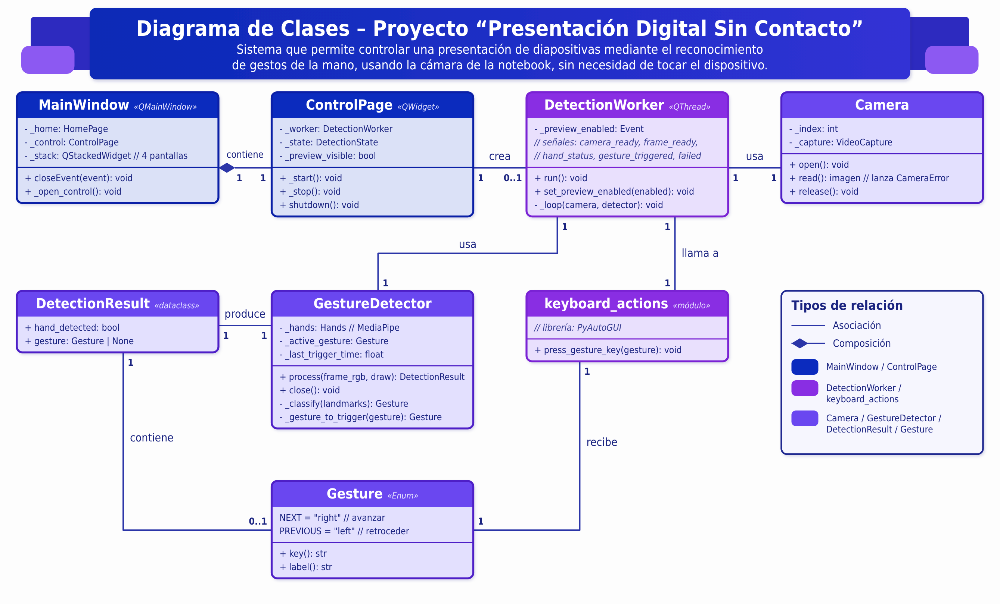
Diagrama de clases
Es un tipo de diagrama estructurado en el Lenguaje de Modelado Unificado (UML) que representa gráficamente la estructura y organización del sistema orientado a objetos.
Ver diagrama completoSistema que usa la cámara para controlar diapositivas con gestos de la mano, sin depender de mouse, teclado ni de otra persona.
Depender del teclado, el mouse u otra persona para manejar una presentación
Docentes y estudiantes
Presentaciones más fluidas y dinámicas
| Año | Qué se hizo | Producto |
|---|---|---|
| 2º | Investigación, diseño, programación en Python, detección de manos, movimiento del cursor y clics por gestos. | Prototipo funcional |
| 3º | Mejoras, pruebas, metodología mixta y finalización de la interfaz de usuario. | Sistema implementado |
| Año | Mes | Actividades | Responsables | Entregable |
|---|---|---|---|---|
| 2025 | Junio | Lanzamiento del proyecto de promoción | Todo el equipo | Evento de lanzamiento |
| Julio | Pruebas con usuarios (piloto) | Alejandro Trigo (Desarrollo), Lía Ochipinti (Coordinación) | Informe de prueba 1 | |
| Agosto | Ajustes de mejoras | Alejandro Trigo (Desarrollo) | Versión 1.1 | |
| Septiembre | Pruebas extendidas | Alejandro Trigo (Desarrollo), Lía Ochipinti (Coordinación) | Informe de prueba 2 | |
| Octubre | Documentación final | Rocío Gómez (Documentación) | Manual final y guía técnica | |
| Noviembre | Revisión de feedback post-lanzamiento | Lía Ochipinti (Coordinación), Ariel Amarilla (Documentación y recursos) | Lista de mejoras | |
| Diciembre | No se registraron actividades de desarrollo en este período. | — | Sin entregables | |
| 2026 | Enero | Planificación de nuevas funcionalidades | Todo el equipo | Plan de desarrollo 2026 |
| Febrero | Implementación de mejoras | Alejandro Trigo (Desarrollo) | Versión 2.0 | |
| Marzo a julio | No se registraron actividades de desarrollo en este período; no se generaron entregables asociados. | — | Sin entregables | |
| Agosto | Desarrollo del sitio web | Ariel Amarilla (Recursos y Desarrollo Web) | Sitio publicado en GitHub Pages y manual de usuario | |
| Septiembre | Pruebas finales | Lía Ochipinti (Coordinación) | Informe de pruebas finales | |
| Octubre | Documentación actualizada, defensa final y cierre del proyecto | Todo el equipo | Manual actualizado, guía técnica, demo final e informe de cierre |
Desliza hacia los lados para ver el cronograma completo.
En 2.º año el trabajo se centró en construir las funciones básicas del sistema y probarlas. En 3.º año el equipo aplicó una metodología mixta: combinó la organización por etapas, con fechas y entregables definidos en el cronograma, con prácticas de trabajo ágil, es decir, avances cortos que se revisan y se mejoran.

Es un tipo de diagrama estructurado en el Lenguaje de Modelado Unificado (UML) que representa gráficamente la estructura y organización del sistema orientado a objetos.
Ver diagrama completo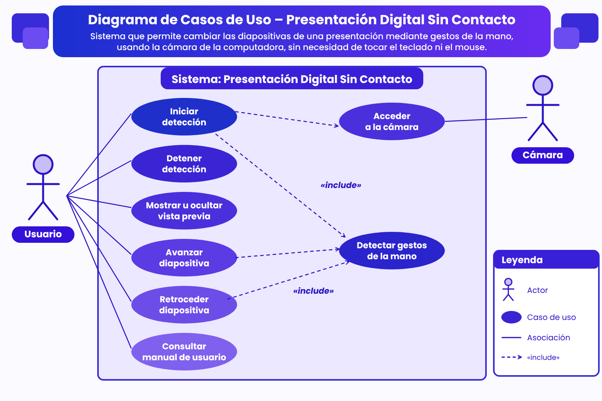
Representación visual que muestra las funciones principales del sistema y cómo los usuarios interactúan con él.
Ver diagrama completo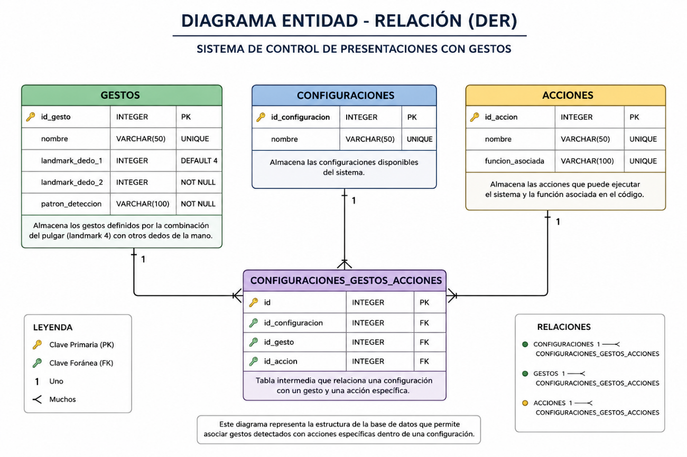
Un Diagrama de Entidad-Relación (DER) es un modelo visual que se utiliza para diseñar y representar la estructura lógica de la base de datos.
Ver diagrama completoEste sistema permite controlar una presentación con gestos de la mano frente a la cámara: cambiar de diapositiva sin tocar el mouse ni el teclado, al unir el pulgar con otro dedo.
Computadora con Windows, cámara web, buena iluminación y Python 3.10 o superior.
Descargar el proyecto desde GitHub, instalar las librerías con pip (ver Manual de programación) y ejecutar el archivo principal.
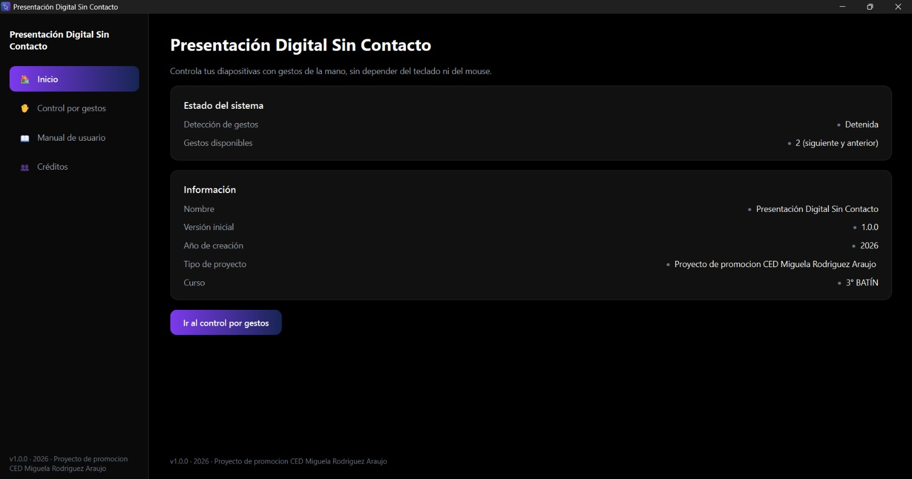
Muestra el estado del sistema, que indica si la detección está detenida o en marcha, y cuántos gestos hay disponibles. Debajo están los datos del proyecto y el botón «Ir al control por gestos».
Es la pantalla de trabajo. El botón «Iniciar detección» enciende la cámara y «Detener detección» la apaga. Con «Ocultar vista previa» se deja de ver la imagen, pero la detección sigue activa. Los indicadores muestran si el sistema está funcionando y si la mano se detecta o no.
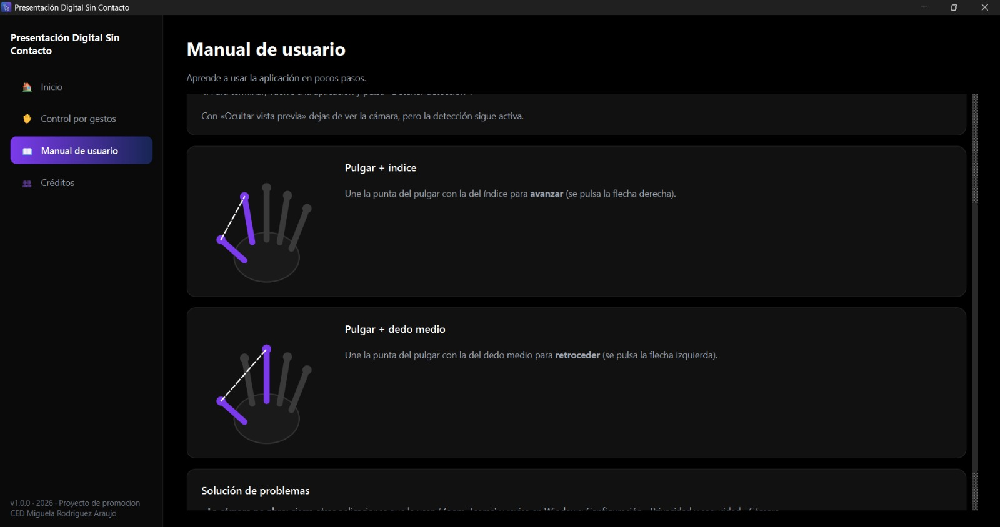
Explica los pasos para usar el programa y muestra con dibujos los dos gestos. Al final hay una sección para resolver problemas frecuentes.
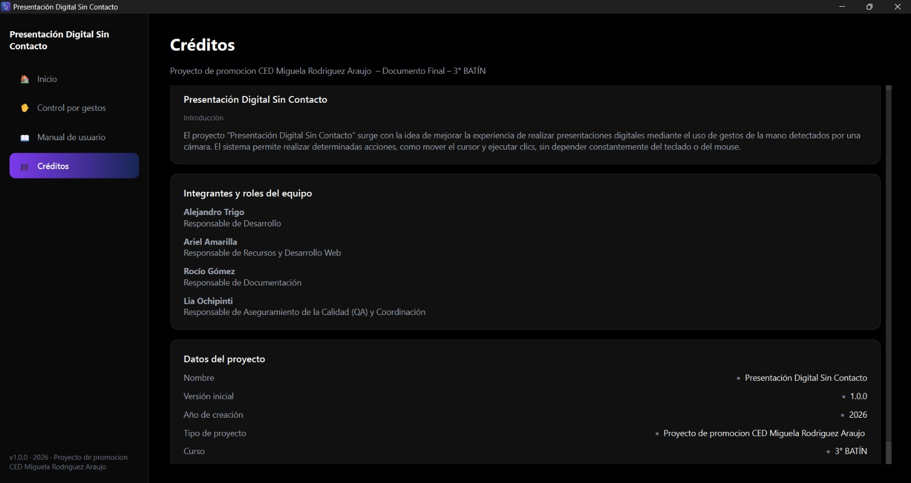
Presenta la introducción del proyecto, los integrantes con su rol dentro del equipo y los datos del proyecto, como la versión, el año y el curso.
Mejorar la iluminación y mantener la mano completa dentro del cuadro de la cámara.
Unir bien las puntas de los dedos y esperar medio segundo entre un gesto y el siguiente.
Cerrar otras aplicaciones que la estén usando, como Zoom o Teams, y revisar en Windows el permiso de la cámara en Configuración, Privacidad y seguridad, Cámara.
Cámara → OpenCV → MediaPipe → reglas de gestos → PyAutoGUI → flechas del teclado. Los parámetros se guardan en el archivo config.py.
Ver sección Diagramas.
Modelo propuesto con las tablas GESTOS, ACCIONES y CONFIGURACIONES. El programa actual no usa base de datos. Ver detalle.
MainWindow (ventana principal), ControlPage (pantalla de control), DetectionWorker (trabajo en segundo plano), Camera (cámara), GestureDetector (detección de gestos), DetectionResult y Gesture (resultado y tipos de gesto). Ver la descripción de cada clase.
Instalar las librerías con pip install -r requirements.txt y ejecutar python main.py.
OpenCV (imagen), MediaPipe Hands (puntos de la mano), PyAutoGUI (pulsación de teclas) y PySide6 (interfaz).
Código fuente del programa.
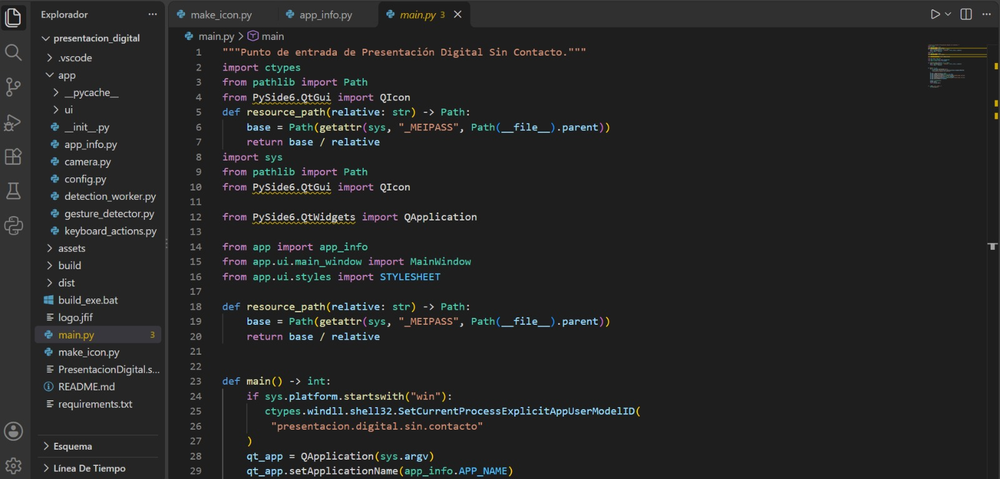
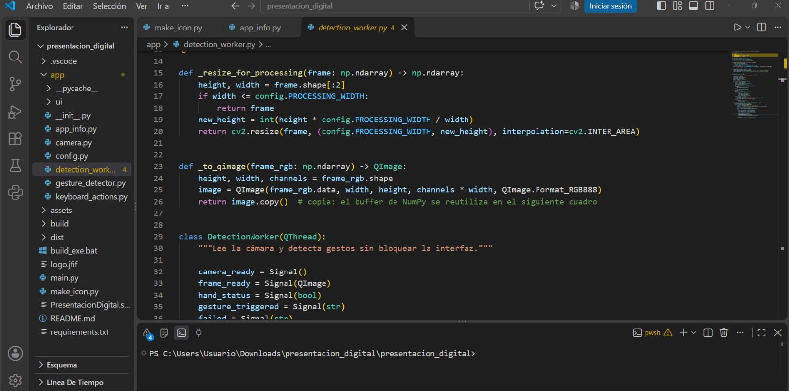
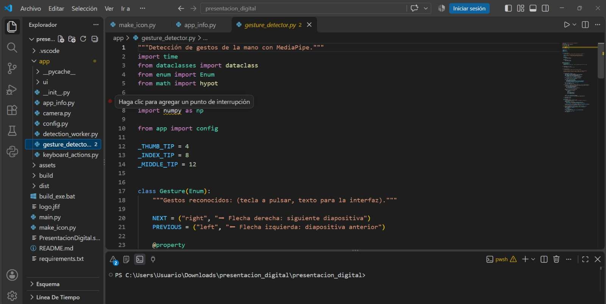
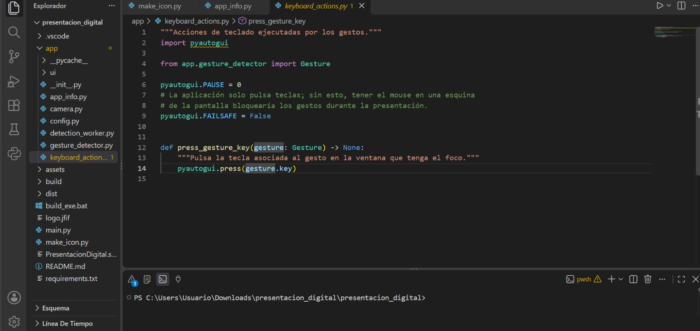
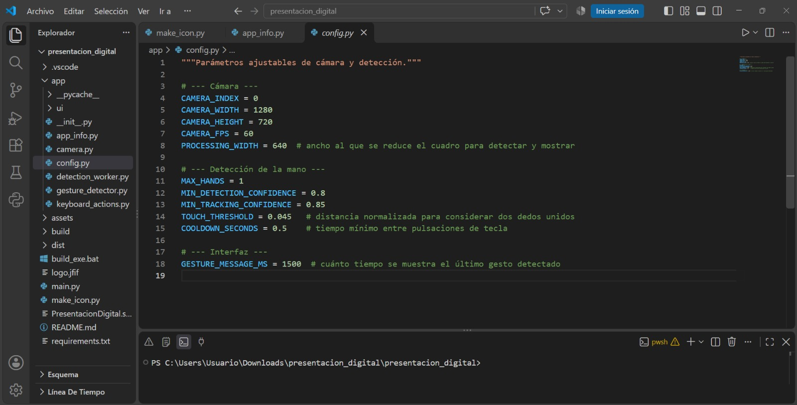
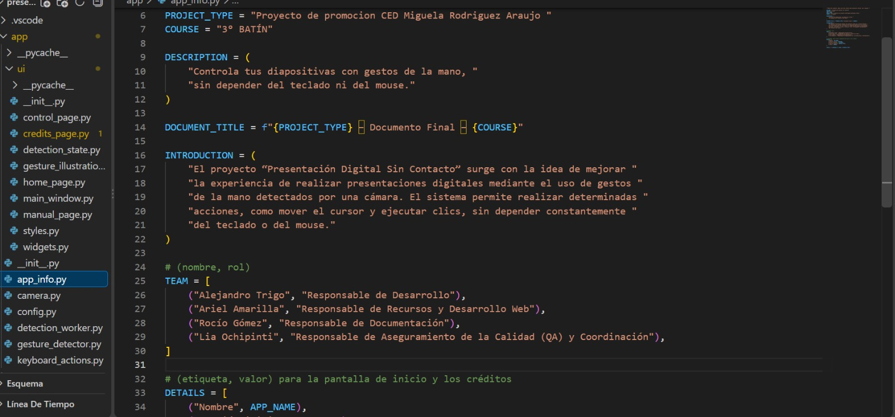
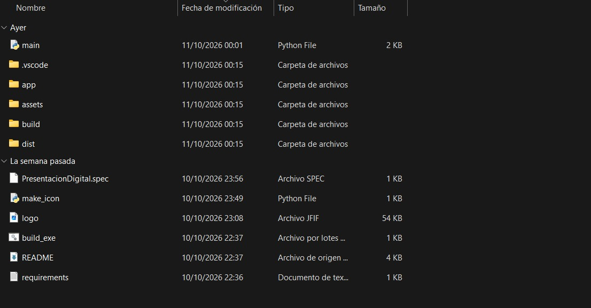
Desarrollo y prueba de la página web.
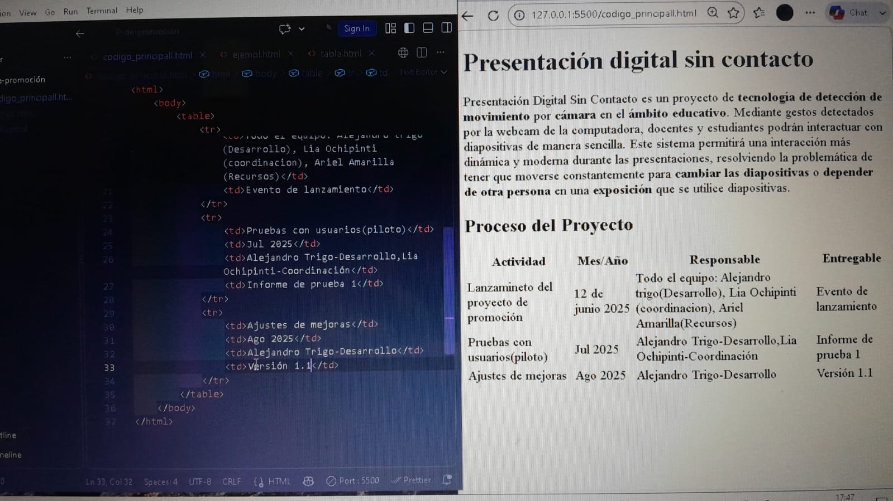
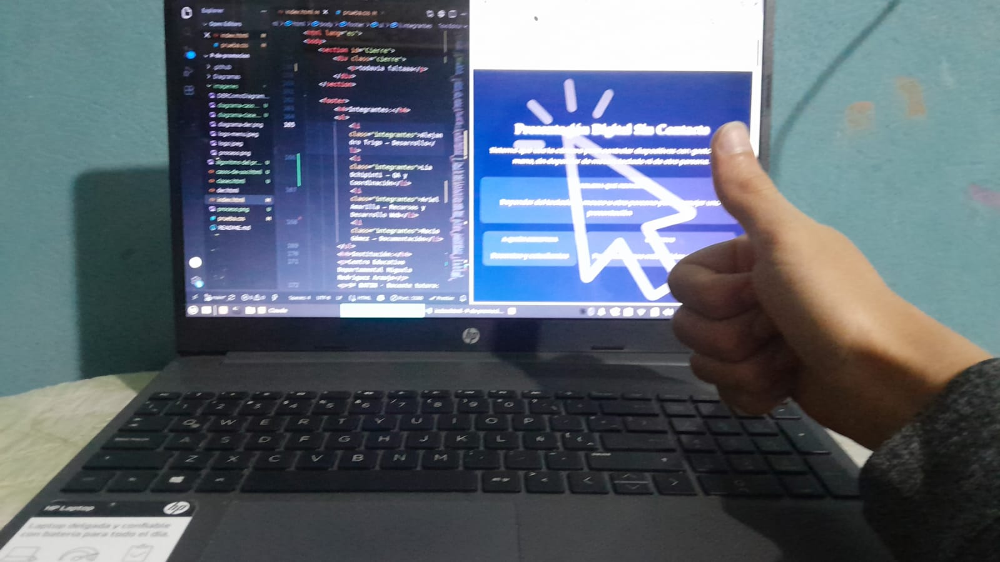
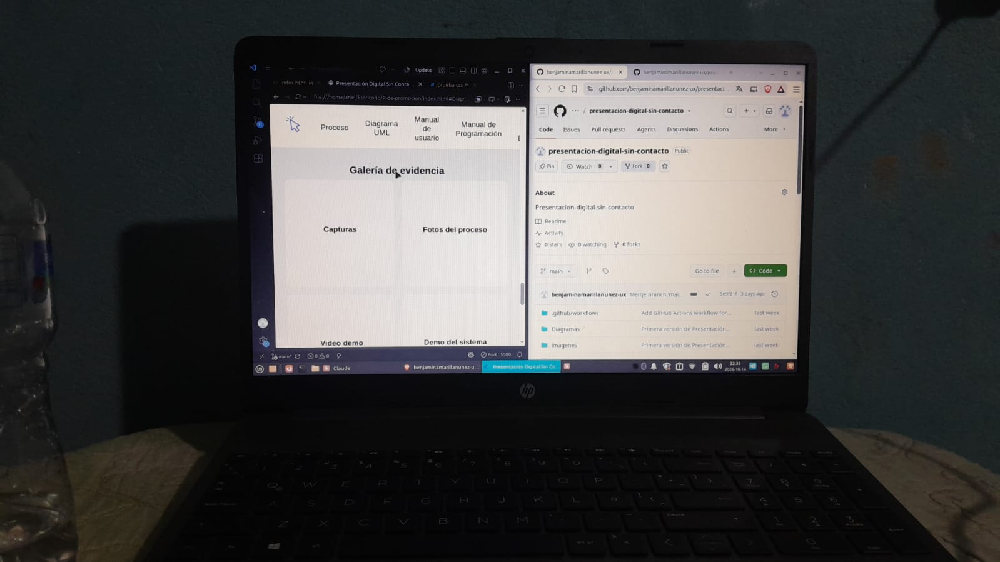
El sistema funcionando.
Una persona usa el programa en el aula: tres momentos de la demostración.
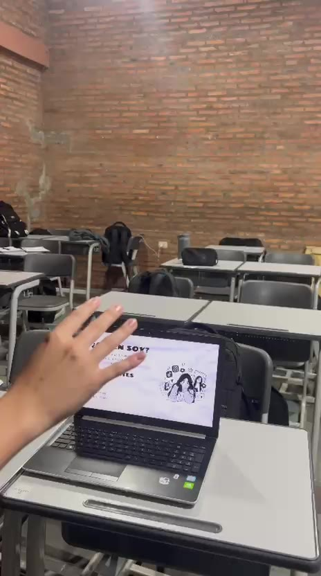
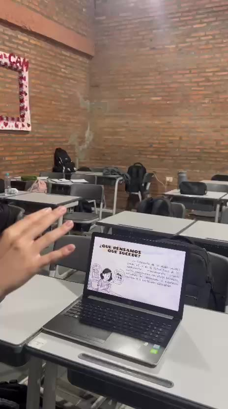
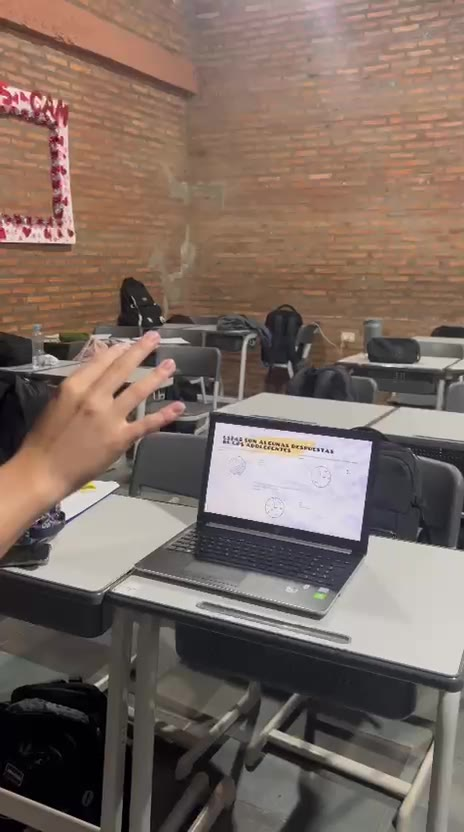
Se completaron las funcionalidades previstas: cámara, detección y seguimiento de la mano, gesto de pulgar con índice para avanzar, gesto de pulgar con dedo medio para retroceder e interfaz de usuario, con el 100 % del alcance comprometido.
Como retrospectiva, el equipo destaca haber logrado el reconocimiento de gestos y completar la interfaz, y la importancia de probar y revisar durante todo el proceso.
El proyecto «Presentación Digital Sin Contacto» demuestra cómo la tecnología puede facilitar el manejo de presentaciones digitales mediante gestos de la mano, sin necesidad de tocar la computadora. Esta propuesta permite interactuar de una manera más práctica, moderna e innovadora, y así ayuda a mejorar las actividades cotidianas.